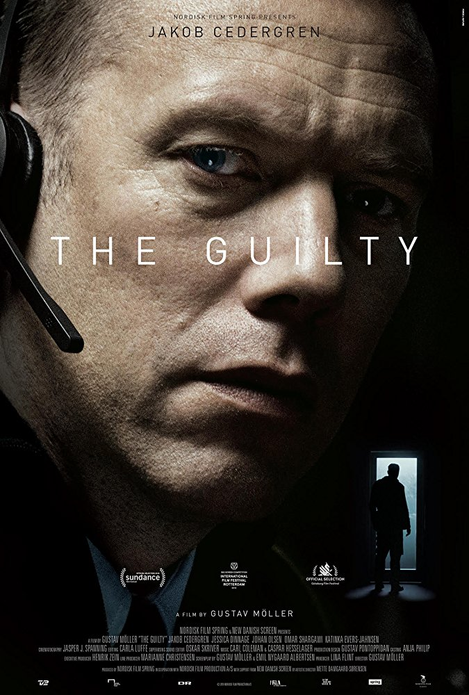

THE GUILTY - A STUNNING CRIME TRILLER THAT TAKES PLACE ONLY IN A SINGLE ROOM
“Film that gives every single audience member a completely unique experience.” Gustav Moeller

Credit: Showtimes.com
Synopsis
The feature debut of Gustav Moeller “The Guilty” (original title: Den skyldige) is a suspensful thriller with hostages, stalking, burglary, alcohol, weapons, blood, sirens and a suicide on a bridge where none of this is visible, but you can imagine and feel everything very vividly.
Asger Holm is a former police officer who is stuck in the role of dispatcher at the Copenhagen emergency call centre 112.
We can see from the very beginning that he is not very enthusiastic to be there, and this job is a kind of a punishment for him. He would rather do something other than just sitting there where everything stays the same every day and is so boring for his detective soul.

Jakob Cedergren as Asger Holm
Credit: VULTURE.com, Photo: Nikolaj Moeller
Asger receives many calls and some of them are unjustified. He is not quite willing to answer them and, even if he is doing his job, he resents the ringers (he even mumbles out to one of them: “It’s all your fault.”). His lack of emotions is very frustrating and there is no charm at all in his character. The mixture of boredom and animosity reaches its peak just before the end of his last shift when he answers the emergency call from a kidnapped woman named Iben (Jessica Dinage) who is travelling in her kidnapper’s car. He puts all his efforts and actions limited only by the tool – the phone, to rescue her.

The Emergency Call Center
Credit: FILMMAKERMAGAZINE.com, Photo: Nikolaj Moeller
The movie is shot in 13 days with 3 cameras and has a low-cost budget of half a million euro. It takes place only in two adjoining rooms of the 112 dispatch call center. This minimalistic setup has a great effect on the movie and increases its tension.
Inspirations
One of the biggest inspiration for “The Guilty” is the investigative podcast of Sarah Koenig and Julie Snyder’s “Serial” which is a true crime story about the murder of a high-school student in Baltimore, 1999.
“With every episode I got new information about the people involved and the places and occurrences. With every episode my image of these people changed,” he said. “That was a direct inspiration that me and my co-writer talked about: how to organically add information and organically have the images change throughout the film.”
- Gustav Möller
His cinematic inspiration comes from Sidney’s Lumet “Dog Day Afternoon”. He shot the whole movie in a chronological order with 3 cameras which creates the real time feeling.
“The whole feel of that film, the nerve-racking stress that is in that film – that inspired the way we shot the film, using several cameras during very long takes.”
- Gustav Möller
Watch the Trailer
Trailer-"The Guilty", Credit: YOUTUBE.com
Gustav Moeller and the co-writer Emil Nygaard Albertsen, together with the brilliant performance by Jakob Cedergren in the leading role skilfully keep the interest of the viewer and challenge his mental and emotional capacity as well as his imagination. Oskar Skriver, who is the supervising sound editor, also played a major role in adding to the intrigue of the movie.
The end of the movie is mind-blowing. It raises a lot of questions - to what extent should we interfere if something bad happens? How much truth to tell when we must be honest, but we don’t want to be rude? If it is possible to be wrong in one conclusion how can we be sure that we are not wrong in everything?